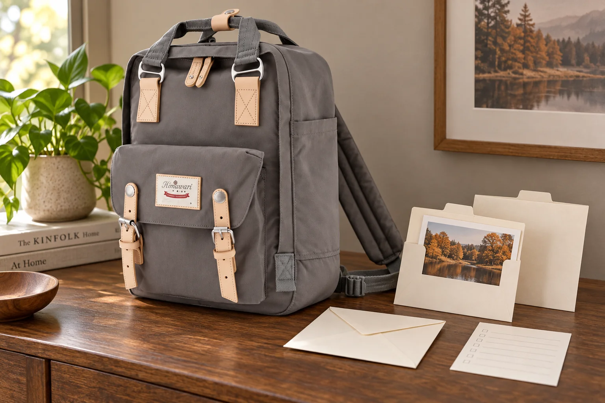

인화 사진을 가져가는 날: 파일 이름은 별도 목록에 남기기

인화한 사진 몇 장을 백팩에 넣고 함께 볼 사람을 만나러 갑니다. 비슷한 풍경이 여러 장이면 어느 파일을 인화했는지 나중에 다시 찾기 어려울 수 있습니다. 종이 사진에 파일 이름을 바로 쓰기 전에 별도의 작은 목록부터 만들어보세요.
사진 순서와 파일을 나란히 대조합니다
인화 사진을 한 장씩 보며 원본 파일의 화면과 맞춥니다. 비슷한 구도의 연속 사진이라면 사람의 위치나 배경의 작은 차이를 확인하세요. 날짜만으로 충분하지 않을 때는 파일 이름과 현재 보관 폴더를 목록에 남깁니다. 아직 대조하지 못한 사진은 추측한 파일 이름을 적기보다 확인이 남았다고 표시합니다. 인화 순서가 촬영 순서와 같다고 가정하지 않습니다.
번호는 사진 대신 봉투나 목록에 씁니다
목록의 순번과 사진을 담는 봉투·보관재의 표시를 맞춥니다. 미국 의회도서관의 사진 취급 안내는 가능한 한 사진 자체에 표시하지 않고 보관재에 표시하는 편을 권하며, 사진에 접착 메모나 테이프를 붙이지 않도록 안내합니다. 목록을 고정하려고 사진을 집게나 고무줄로 직접 묶는 방식도 피하세요. 인화물에 맞는 보관재는 별도로 확인합니다.
함께 볼 때는 목록을 옆에 둡니다
사진을 꺼내 보여주는 자리에서는 목록도 함께 펼쳐둡니다. 여러 장을 섞어 본 뒤에는 어느 사진이 어느 봉투의 것이었는지 다시 대조하세요. 손을 깨끗하게 하고 사진의 가장자리나 보관재를 잡으며, 음료가 있는 자리에서 인화물을 펼치지 않습니다. 목록을 다른 사람에게 건넬 때는 자신의 전체 폴더 경로나 불필요한 개인 정보까지 포함되어 있지 않은지도 읽어봅니다.
돌아온 뒤에는 파일 위치가 바뀌었는지 확인합니다
사진을 다시 정리하며 목록과 봉투의 표시가 맞는지 봅니다. 원본 파일을 다른 폴더로 옮겼다면 목록도 실제 위치에 맞게 고칩니다. 목록이 있다는 사실이 파일 백업이나 사진의 장기 보존을 대신하지는 않습니다. No.188L의 외부 크기는 가로 28 × 세로 39 × 폭 15cm입니다. 사진 속 봉투는 가방과 별도로 두었으며 이 백팩이 사진 보존용 수납재라는 뜻은 아닙니다.
참고·안내
- Himawari No.188L 제품 정보
- 실제 Himawari No.188L 그레이 원본을 참조한 AI 연출 사진입니다. 인화 사진·봉투·목록지는 별도 소품이며 실제 고객이나 여행 기록을 나타내지 않습니다.
자주 묻는 질문
인화 사진 뒷면에 파일 이름을 적어도 되나요?
먼저 별도 목록과 보관재의 표시를 활용해보세요. 사진 자체의 표시는 인화 재질에 맞는 보존 안내를 확인하며, 이 글은 직접 쓰는 방법을 권하는 안내가 아닙니다.
파일 이름을 적으면 원본을 지워도 되나요?
목록은 사진과 파일을 연결하는 기록일 뿐 백업이 아닙니다. 파일 보관과 백업 상태를 별도로 확인하세요.